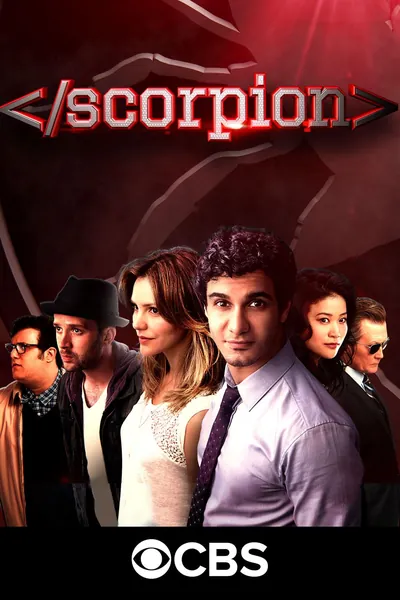

Сериал · 2014 · Боевик, Драма
Гениальный, но социально беспомощный Уолтер О'Брайен собирает команду таких же «асов» — айтишника, механика, психолога и специалиста по поведению — и работает на правительство, решая проблемы, где обычных агентов не хватит. Сериал открыто упрощает науку, но задача другая: показать команду, где техническая одарённость — не суперсила, а форма уязвимости. Лёгкий, дружелюбный к зрителю сериал про «чудо-команду» для тех, кто любит решать задачи быстрее героев.
Brilliant but socially helpless Walter O'Brien assembles a crew of fellow 'aces' — a coder, a mechanic, a behaviorist — and works for the government on problems ordinary agents cannot solve. The series openly simplifies the science, but its goal is different: to show a team where technical giftedness is not a superpower but a form of vulnerability. A light, viewer-friendly series about a 'miracle team' for people who enjoy solving tasks faster than the heroes.